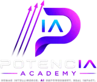

Una experiencia breve de reflexión inspirada en F.O.C.U.S. y La Sabiduría del Ajolote, de la Dra. Claudia Jones. Observa tu momento, elige un foco y conviértelo en una microacción concreta.
Brújula no busca darte una etiqueta ni decirte qué hacer. Te ayuda a observar, elegir un foco y volver sobre lo que decidiste.
1 = necesito atenderlo · 5 = se siente sólido hoy.
1 = quiero explorarlo · 5 = se siente alineado.